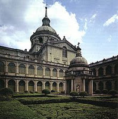
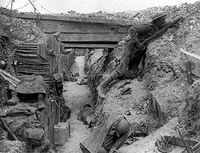
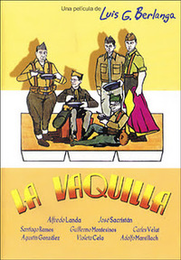
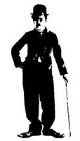
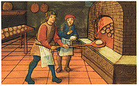

Limpieza de sangre en El Escorial
2011-11-23T23:32:00.001+01:00

En el siglo XVI, ya lo hemos comentado en otras ocasiones, era vital la limpieza de sangre, es decir, ser de familia cristiana y con algo de nobleza. Por ejemplo,era necesario para ingresar en un monasterio. Concretamente en el monasterio de El Escorial las normas eran muy estrictas y tenían en cuenta estas cosas.
Se solía entrar a formar parte del monasterio cuando se era niño, entre los 9 y los 13 años, y se debía demostrar la limpieza de sangre. Este requerimiento era uno de los principales y estaba escrito en los estatutos de la orden a de San Jerónimo.
Lo curioso es que la limpieza de sangre no se paraba únicamente en la exclusión de todos aquellos con algún ascendiente, por lejano que fuera, judío o morisco, sino que también hacía otras distinciones. No podían formar parte de la congregación niños cuyos padres tuvieran trabajos viles. Este tipo de oficios eran cosas tan simples como herrero, arriero, molinero, mesonero, pregonero, porquerizo, zapatero… En realidad, casi era necesario ser hijo de hidalgo o labrador para poder ser monje.
El último muerto de la Primera Guerra mundial
2011-11-21T22:53:00.001+01:00

Hace 10 días fue el aniversario del final de la Primera Guerra Mundial. La Gran Guerra, como también se conoce este conflicto, comenzó el 28 de julio de 1914 y finalizó el 11 de noviembre de 1918.
Supuestamente todas las acciones de guerra debían detenerse a las 11AM del 11 de noviembre. Y digo supuestamente porque en algunos sitios los disparos siguieron. Según las notas de un capitán británico: A las 11:15AM tuvimos que acabar con un soldado enemigo que insistía en seguir disparando con su ametralladora. El armisticio ya era efectivo pero, ¿qué podíamos hacer? Quizás tuviera su reloj estropeado. En cualquier caso, es posible que fuera el último alemán muerto en aquella guerra
Fuente: Military's strangest campaigns and characters, de Tom Quinn
La Vaquilla, intercambiando papel y tabaco
2011-11-17T23:18:00.001+01:00

Comenzaré diciendo que "La Vaquilla", la película del gran Berlanga, tiene algunas cuestiones que no por parecernos absurdas e hilarantes están lejos de la realidad. En concreto, hay un momento, al comienzo de la película, en el que se juntan soldados nacionales y republicanos para intercambiar papel de liar y tabaco, ya que unos tienen tabaco y les falta el papel, y en el bando enemigo las existencias son justo las contrarias. Así, fumaban todos.
Pues cuenta un señor llamado Aquilino Núñez, combatiente nacional en el frente de Somosierra, lo siguiente: “En una ocasión teníamos que bajar a por leña a una zona de olivos que estaba entre las dos líneas y allí nos juntamos con los republicanos que habían ido a por lo mismo, y nos juntamos los de los bandos y conversábamos. Ellos nos daban papel de fumar y nosotros les dábamos tabaco. Llegaba un momento en que cortábamos el olivo, cada uno cogía lo suyo y cada uno para su lado”.
Ejemplos como este hay varios, pero que no sirva esto para restar seriedad al asunto, ya que también rebosó sangre, crueldad y muerte por los cuatro costados aquella guerra. Y acabemos con la vaquilla, esa vaquilla que es España, tal y como finaliza la película. Inviertan un ratito en la película, pasaran un buen rato, se lo aseguro.
Fuente: Historias orales de la Guerra Civil, de Alfonso Bullón de Mendoza y Álvaro de Diego
Chaplin perdió un concurso de imitadores
2011-11-07T22:53:00.002+01:00

La curistoria de hoy la había escuchado hace tiempo, pero siempre la di por falsa. Hoy, consultando la Wikipedia, he acabado en la página de Snopes, un lugar en el que se dedican a comprobar leyendas urbanas y mitos, determinando si son falsas o reales. Y dan la historia por cierta.
Ya les he contado alguna vez el nivel de fama que llegó a alcanzar Chaplin en las primeras décadas del siglo pasado. Su personaje de vagabundo llegó a ser tan popular que era imitado como un arquetipo de comicidad. En 1915, en un concurso organizado para imitadores de Chaplin, el propio Chaplin participó.
Su intervención no fue nada exitosa y ni siquiera se clasificó para la ronda final del concurso. Aquel concurso tuvo lugar en San Francisco y, supongo, Chaplin participó más por juego que por otra cosa y seguramente exageró los movimientos o gestos o hizo algo para divertirse, lo que le llevó a perder. O quizás no, quizás sus imitadores ya eran mejor que el propio Chaplin metiéndose en la piel del personaje que este había creado.
Otras entradas:
Los Oscars de Charles Chaplin.
El debut artístico de Chaplin.
La estatura de Chaplin.
El discurso de Lincoln en Gettysburg
2011-11-01T22:38:00.000+01:00
Supongo que algunos de ustedes estarán de acuerdo conmigo en que hay discursos en la historia que son auténticas maravillas y que suponen un vehículo perfecto para conocer qué ocurrió en aquel momento y cómo pensaba el orador en cuestión. Desde los grandes discursos de Grecia hasta los discursos políticos de hace apenas unos años, hay muchos dignos de mención y que merecen una pausada lectura.
Uno de los discursos más famosos de todos los tiempos es el que pronunció Abraham Lincoln en Gettysburg el 19 de noviembre de 1863, poco más de cuatro meses después de la gran batalla homónima de la Guerra Civil de los EEUU. Aquel día fue un discurso secundario, no era lo más significativo de la agenda del día, pero ha sido el que ha pasado a los libros de historia.
El plato fuerte era un discurso de Edward Everett, de casi 14.000 palabras y que duró unas dos horas. Frente a esto, las menos de 300 palabras de Lincoln son toda una lección de síntesis. Curiosamente, ninguno de los periodistas que estaban aquel día en el acto consideró las palabras de Lincoln como importantes. No me refiero a la transcripción del discurso entero, sino a alguna frase destacada en la nota que enviaron a sus medios. Ni siquiera eso. Todo se solucionó con un “el Presidente también dijo unas palabras”.
Por cierto, siendo hoy el Día de Todos los Santos y mañana el Día de los Difuntos, creo que conviene apuntar que este discurso fue pronunciado en la Dedicatoria del Cementerio Nacional de los Soldados en Gettysburg.
En la wikipedia pueden leer el discurso.
El origen del "una hora menos en Canarias"
2011-10-30T21:09:00.001+01:00
Ayer recibí en mi twitter (@vitike) un tweet de @garpa, mil gracias, en el que me enviaba un enlace como fuente para una curistoria. Aprovechando que esta noche pasada se cambió la hora (en España) vamos a hablar de horarios. Concretamente del horario de las Islas Canarias.
Para los lectores que no sean españoles, comenzaré aclarando que las Islas Canarias son españolas pero están en el noroeste de África, lejos de la Península Ibérica. Precisamente por su posición, están dentro de una franja horaria diferente a la española. Una hora menos. Es decir, cuando en la península son las 14:00, en Canarias son las 13:00. Los españoles somos muy conscientes de esto ya que en todas las emisoras de radio es común, cuando un locutor dice la hora, acabar diciendo “una hora menos en Canarias”.
El origen de esta coletilla se debe a José Antonio Pardellas Casas, un licenciado en Geografía e Historia nacido en 1938 y con una extensa carrera en las ondas de radio. Ha trabajado y colaborado con un buen número de emisoras y programas, entre ellos, con “Protagonistas”, el programa que desde hace décadas dirige Luis del Olmo.
Precisamente fue en este programa, allá por 1969, cuando nació la coletilla de “una hora menos en Canarias”. Pardellas comentó a Luis del Olmo que cuando se mencionaban las horas peninsulares en antena, desconcertaban en ocasiones a la gente de las Islas, ya que siempre el dato horario era “erróneo” para los insulares. Así, después del comentario de Pardellas comenzaron a colocar la coletilla detrás de la hora y nació aquello de “buenos días, son las 9:00 de la mañana, las 8:00 en las Islas Canarias”.
Fuente: José Antonio Pardellas
Los recolectores de cerezas del ejército británico
2011-10-26T23:34:00.000+02:00
El 11º Regimiento de Húsares del ejército británico, era un regimiento de caballería fundado en 1715 bajo el nombre de Regimiento de Dragones del coronel Philip Honeywood, y con el mismo fue conocido hasta 1751, cuando fue denominado el 11º de Dragones. Pero no son estos nombres los que nos interesan. Lo que nos interesa de este regimiento es su apodo de los “recolectores de cerezas” (The Cherry Pickers) y el origen de dicho apodo.
Durante la Guerra de Independencia española, en la que los británicos lucharon del lado español contra los napoleónicos venidos de Francia, ocurrió lo que nos interesa. Estaban los hombres de este regimiento por la zona de San Martín de Trevejo (Cáceres) en 1811, cuando se pusieron a recoger cerezas de un campo. Desprevenidos por ello, fueron sorprendidos y capturados por el enemigo. A partir de entonces, se les comenzó a llamar en el ejército británico como los “Recolectores de cerezas”, los Cherry Pickers.
En 1840 cambiaron de uniforme y curiosamente el nuevo diseño incorporaba unos pantalones color cereza, caso único entre los regimientos británicos. Aunque pudiera parecer que fue por el tema de la recolección cacereña, no fue así. El cereza de los pantalones se debía a los colores de la casa del Príncipe Alberto, a la que pertenecía el regimiento desde aquel año, 1840.
El cortador, seguridad para el rey
2011-10-24T23:40:00.000+02:00

En la época medieval era habitual comer cerdos, cabritos y otros animales asados. Se presentaban en la mesa enteros y había un hombre encargado de trocearlos. Este hombre era denominado cortador o trinchante y su tarea no era sencilla.
Ser cortador era un cargo relativamente importante dentro del entorno real y debía conocer perfectamente el protocolo y cómo tratar a los nobles y al rey. Solía acompañar al monarca allá donde fuera. ¿Porque le gustaba al rey su forma de trinchar? No exactamente.
Los cuchillos que utilizaba para trinchar la carne que comía el rey, en caso de ser envenenados, podían acabar fácilmente con la vida de este. Por lo tanto, el cortador era un cargo de confianza, un hombre leal a su rey. Todo lo que necesitaba para su trabajo viajaba siempre con él y con el rey: cuchillos, tenedores, trapos para limpiar…
La seguridad iba más allá aún. Los instrumentos del cortador siempre se guardaban y transportaban en un baúl cerrado con llave. Antes de comenzar a comer, el cortador usaba los cuchillos para extraer de un pan una rebanada y se la daba a probar al repostero real. Si los cuchillos habían sido envenenados, el repostero moriría. ¿Por qué el repostero real? Pues porque sobre él recaía la responsabilidad de custodiar el baúl del cortador.
Por cierto, según parece esto de usar “un probador” para ver si los alimentos han sido envenenados ha sido una costumbre en varias épocas y situaciones. Pero yo lo veo algo inútil en muchos casos, salvo en el caso de que el veneno sea de efecto inmediato. Si este mata pasadas dos horas, después de la comida morirán el rey y el probador. Eso sí, sabiendo que su vida estaba en juego, seguro que el probador vigilaba para que no envenenaran al rey.